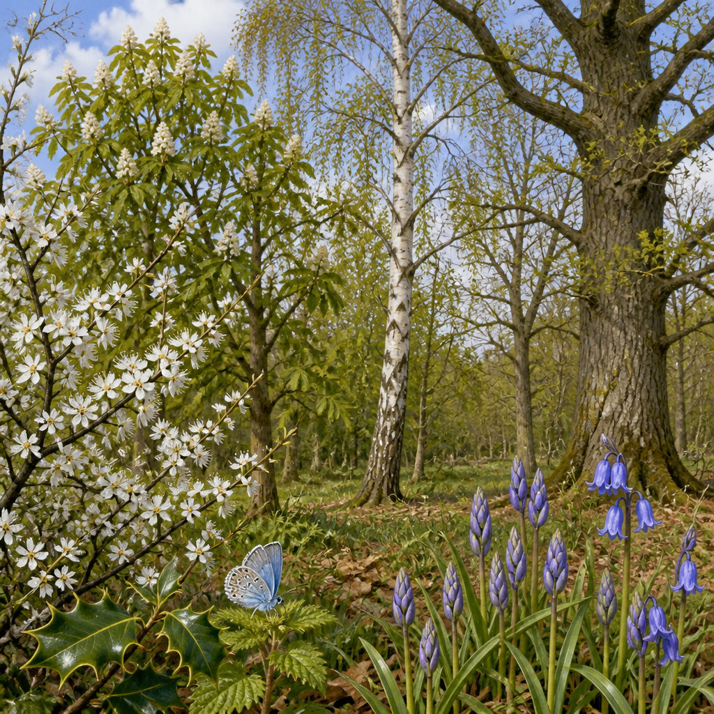

Un progetto pilota nei parchi nazionali misura come temperature più alte stiano modificando il calendario della natura.
La primavera non segue un calendario fisso. Il momento in cui gli alberi mettono le foglie, i fiori sbocciano, gli insetti compaiono e gli uccelli arrivano o iniziano a nidificare può cambiare di anno in anno. Nel Regno Unito, un progetto pilota sta osservando questi segnali nei parchi nazionali del New Forest e dei South Downs per capire come il riscaldamento stia modificando i ritmi della natura.
L’iniziativa, chiamata Nature’s Changing Seasons in National Parks, unisce dati climatici, osservazioni raccolte dal pubblico e conoscenze locali dei parchi. L’obiettivo è misurare che cosa significano le stagioni che cambiano per piante, animali selvatici e paesaggi. In futuro, con ulteriori investimenti, il metodo potrebbe essere esteso ad altri paesaggi protetti del Regno Unito.
La disciplina che studia gli eventi naturali ricorrenti si chiama fenologia: osserva, per esempio, quando una pianta entra in foglia, quando fiorisce, quando emerge un insetto o quando un uccello arriva e nidifica. Questi eventi stagionali aiutano a capire in che modo le specie stanno rispondendo a un clima che cambia.
Il progetto combina le osservazioni di lungo periodo inviate dal pubblico attraverso la piattaforma Nature’s Calendar del Woodland Trust, le registrazioni di temperatura del Met Office e l’esperienza locale dei parchi nazionali. Durante la fase pilota sono state individuate ventiquattro specie prioritarie, fra uccelli, farfalle, fiori selvatici e alberi.
Tra queste, otto sono risultate particolarmente sensibili a primavere più calde nel sud-est dell’Inghilterra. Sono quattro alberi — prugnolo, ippocastano, betulla argentata e quercia — tre farfalle — cedronella, pavone di giorno e azzurrina dell’agrifoglio — e un fiore selvatico, la campanula. I primi risultati indicano che queste specie stanno già emergendo prima in primavera negli anni più caldi.
L’analisi offre anche un’indicazione su come potrebbero variare questi tempi se le temperature continueranno a salire. Per l’azzurrina dell’agrifoglio, un ulteriore aumento di un grado potrebbe portare a un’emergenza di circa sette giorni prima rispetto alla media attuale. Con due gradi in più, l’anticipo arriverebbe a circa quattordici giorni.
Considerando tutte le specie analizzate, due gradi di riscaldamento aggiuntivo potrebbero anticipare l’emergenza primaverile di un intervallo compreso tra nove e diciannove giorni. Non si tratta solo di una variazione della data sul calendario: per gli ecosistemi, la coincidenza dei tempi è importante.
Nel progetto pilota, otto specie sono risultate molto sensibili alle primavere più calde nel sud-est dell’Inghilterra. Con due gradi di riscaldamento aggiuntivo, per le specie analizzate l’emergenza in primavera potrebbe anticipare da nove a diciannove giorni.
Piante, insetti, uccelli e altri animali hanno sviluppato nel tempo calendari stagionali coordinati, utili a mantenere popolazioni stabili. Se alcune specie anticipano la primavera e altre no, questa relazione può interrompersi. Gli insetti, per esempio, potrebbero comparire prima del momento in cui gli uccelli ne hanno bisogno per nutrire i pulcini. Oppure i fiori potrebbero sbocciare quando i loro impollinatori non sono ancora attivi.
Il monitoraggio dei cambiamenti stagionali può quindi aiutare a prepararsi agli effetti del cambiamento climatico e a proteggere fauna, habitat e paesaggi. I dati possono anche orientare azioni pratiche di conservazione, gestione del territorio e adattamento climatico. Fra gli esempi indicati dal progetto c’è la scelta del periodo del taglio periodico degli alberi e degli arbusti, per continuare a favorire farfalle e uccelli.
Le osservazioni non riguardano soltanto l’inizio della primavera. Il Woodland Trust segnala che le recenti ondate di calore si stanno già manifestando anche con la colorazione precoce delle foglie di molti alberi e arbusti. Questo cambiamento è fra gli eventi che i volontari registrano attraverso Nature’s Calendar e può aiutare gli scienziati a comprendere gli effetti del tempo e del clima.
Nel corso dell’estate, caratterizzata da siccità prolungata e temperature elevate, nel South Downs National Park alberi e piante hanno mostrato difficoltà. Molti hanno iniziato a perdere le foglie in anticipo, come meccanismo di risposta. Per il progetto, osservare sia gli effetti a breve termine sia quelli più estesi nel tempo è essenziale per capire come cambiano i processi naturali.
La partecipazione del pubblico è una parte centrale dell’iniziativa. Chi visita o vive vicino ai parchi nazionali può registrare le proprie osservazioni sulla piattaforma Nature’s Calendar. Ogni segnalazione contribuisce a costruire una base di dati più ampia su come la natura risponde al cambiamento climatico e può sostenere l’eventuale espansione del progetto in altri paesaggi protetti.
Questo articolo l'hai letto sul blog di Meteo News Radar: un'app che ti mostra da dove vengono i numeri, invece di limitarsi a dartelo. E ogni mattina ne trovi uno nuovo come questo.